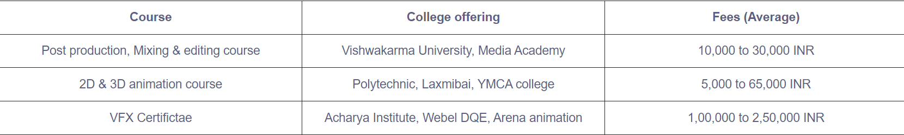
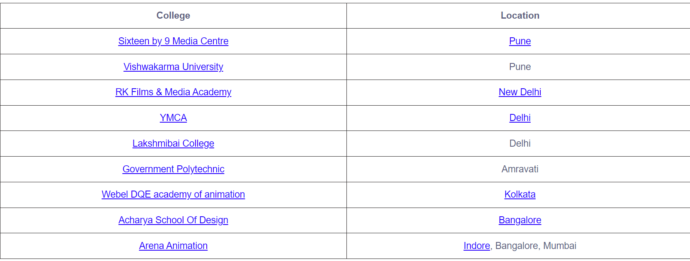
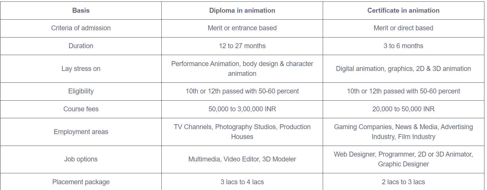

In recent years, animation has risen to be one of the top sought-after employment options among college students and graduates. Creative visualization, narrative ability, and strong technical knowledge are required to transform an impractical world of imagination into a realistic one. It is an interesting field that involves talents in creativity, visualization, storytelling ability, and excellent technical knowledge. It is the skill of Animators & Multimedia technicians that has contributed to the enormous success of films such as Chotta Bheem, Transformers, Avatar, and others.
When a talented animator presents still images at rapid speed, they are transformed into motion. It gives the audience the impression that they are watching a movie in motion. The animator breathes life into cartoons and characters that have been created.
Here are the best reasons as to why one should go for it:
In addition to developing significant technical skills, students who complete the Certification in Animation Course will have the opportunity to improve their ability to think critically, solve problems, and work in groups.
In today's fast-paced world, having a Certification is a smart strategy to make applicants more attractive to employers.
Today's market offers a diverse selection of animation courses, making it a viable option for people looking to bring their dreams to life through their ideas.
Because of the growing need in the entertainment business, the animation sector is booming in size daily. As a result, there are several options to pursue a respectable job in the animation sector.
Animation is among the most thriving professions in the twenty-first century. The animation sector is an excellent choice for individuals who are more creative and who have a strong interest in the animation world or how it operates. In addition, to become an animator, one must have a strong imagination and also excellent sketching and drawing abilities.
Students enrolled in Animation Certificate programs have the opportunity to master basic computer-based animation techniques, which include hand drawing. Students learn about animation history as well as the technology that has been used in the profession.
These programs also instruct students on the differences among software for digital art and what computer programs will be most suitable for use on the Web or in motion picture production. In addition, students following this course may be able to get entry-level employment in the area they are studying.
Basic drawing, the beginnings of Photoshop, the history of animation, Flash layout, editing software, and other topics are examples of typical courses.
The animation industry, which is a highly creative area, demands individuals to have a brilliant imagination as well as the capacity to envisage their projects. The following are the fundamental skills that candidates interested in pursuing a career in animation must possess:
A Certification in Animation is indeed a short-term specialization course that can be completed in a few weeks. Based on the program & specialization pursued, the duration of this entry-level course ranges from 3 months - 6 months.
Among other things, the Certificate program's curriculum is aimed to offer students with instruction in computer animation, including the use of flash & photoshop.
A few of the most fundamental topics taught in animation are 2D & 3D Animation, Computer Graphics & Digital Animation, Character & Body Design, Performances Animation, and so on.
Most Certificate programs in animation require a minimum of 50 percent - 60 percent marks in the 10th or 12th grade, or an equivalent certification from a recognized board of education to be eligible for enrollment. Some colleges, however, undertake group talks and personal interviews as part of the admissions process.
Diploma courses provide a high-level overview of a certain course. It is primarily intended for students at the entry level. The fundamentals of the course are presented in the certificate courses. As the popularity of Animation courses grows day by day, courses in both online and offline formats are being provided to meet the need for entry-level positions.
Programs are offered in both online and offline modes, with new courses being added daily. Online courses are becoming increasingly popular due to a variety of advantages such as ease of access, learning content available at any time and from any location, and so on.
A diploma course can last anywhere from one month to one year and can cost around Rs 60,000, while a newbie can earn anywhere between INR 3,00,000 and INR 3,50,000 by completing a certificate course in India.
These are appropriate for the ones who are currently employed and wish to enhance their knowledge as well as learn a new skill to advance their careers. Additionally, it is appropriate for individuals who wish to acquire new skills to gain a concept of how the program would be structured.
These programs do not necessitate a large amount of time; in fact, a student can understand these programs by dedicating only two to three hours per day.
Students who have passed their tenth or twelfth grade can enroll in this specific course.
A large number of institutes and training facilities provide Animation certifications through traditional classroom instruction. The following are some of the best offline certificates for the field of Animation.
The following are some institutes/colleges that provide certificate programs in offline animation training.
Check out the differences between the two courses to understand them better:
The animation sector is huge, and as the globe becomes more technologically advanced, many organizations and production companies are on the lookout for great animators, designers, and creative artists to join their teams.
The field of animation is the one in which the greatest number of people are prepared to have a successful career. As a result, multimedia and animation are becoming increasingly popular.
There are opportunities in both government and commercial sector organizations. Various animation companies provide employment opportunities in India and internationally.
Entrepreneurial qualities and investment assets are not required for an animator or multimedia expert to work independently or to start their own business. However, it is recommended that they do so.
The movie industry, ad industry, media and news, game companies, production companies, photography studios, and television channels are all places where you can find work in animation.
The following are some of the most popular job categories that candidates can expect to find in the animation industry, as listed below:
A 3D Animator creates designs for items, sculptures, and other objects in both 2D and 3D formats for use in animation, visual effects, video games, and movies, among other things. They design special effects for movies, commercials, and other media.
Character Designers visualize and develop a character from scratch, following the specifications and guidelines set by senior members. When it comes to character development, he is in charge of the whole picture.
Using Light, lightning artists can enhance the ambiance of a scene by enhancing its tone, depth, and mood, for example. They use a variety of light effects that are dependent on a variety of conditions. They are a part of a vast team of 3D animators who work together.
Increased interest in quality entertainment for animated films, visual effects-heavy films, sports, television shows, internet videos, blogs, and other forms of entertainment has resulted from the rapid expansion of the media & entertainment business.
A huge number of competent and accredited experts are required to provide the material, which in turn is required by the industry. Thousands of employment positions are already available in the media and entertainment business, and thousands more are being created at an unprecedented rate. It is anticipated that the Indian entertainment and media business will generate more than Rs 3070 billion by 2024, according to the results of the poll.